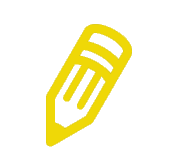

FORMATION
EXPERIENCE PROFESSIONELLE

adresse
32 Rue Jules Vanzuppe, Ivry-sur-seine, France
Téléphone
06 32 30 10 01
Email
redjal.matteo@gmail.com
C'est un homme excentrique, un peu dérangé et paranoïaque, puisqu'il se croit épié par une société secrète qu'il nomme "l'organisation". Il se promène toujours en blouse blanche et possède une capacité spéciale, le Reading;Steiner, permettant de garder sa mémoire lorsqu'il change le cours du temps. Il enquête avec ses amis sur les faits et gestes du SERN et est prêt à tout pour protéger ceux qui lui sont chers